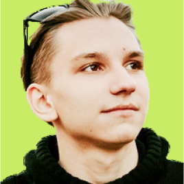
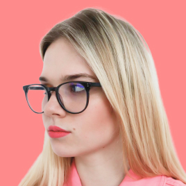

International non-profit community of socially relevant digital product creators
![I'm Olia Nayda (https://olianayda.com) and I'm pictured here with long hair on my beard on which have two ponytails braided with hair bands. I'm wearing a panama with a strange, indecipherable writing on my head. I smile with my mouth open and shout something at the same time, while squinting into the distance. I'm wearing a shirt, a fleece, a T-shirt, and a long-sleeve hooded sweatshirt. The photo is in black, the background is replaced with green, this is the style of UNICORN WITNESSES brand (unicornwitnesses.com)](./img/olga_nayda_photo.jpg)

![I'm Aleksey Dolgih (alexdolbun.com) and I'm pictured here with long hair on my beard on which have two ponytails braided with hair bands. I'm wearing a panama with a strange, indecipherable writing on my head. I smile with my mouth open and shout something at the same time, while squinting into the distance. I'm wearing a shirt, a fleece, a T-shirt, and a long-sleeve hooded sweatshirt. The photo is in black, the background is replaced with red, this is the style of UNICORN WITNESSES brand (unicornwitnesses.com)](img/aleksei_dolgikh_photo.jpg)

![I'm Aleksandr Verevkin (alexandrverevkin.com) and I'm pictured here with long hair on my beard on which have one ponytails braided with hair bands. I'm wearing a hat with a strange, indecipherable writing on my head. I smile with my mouth open and shout something at the same time, while squinting into the distance. I'm wearing a shirt, a fleece, a T-shirt, and a long-sleeve hooded sweatshirt. The photo is in black, the background is replaced with blue, this is the style of UNICORN WITNESSES brand (unicornwitnesses.com)](img/aleksandr_verevkin_photo.jpg)



Evgeny Khristenko
COO,
Fullstack Developer
Nikita Khristenko
COO,
Product Designer


Sofya Bondar
Lead Product Designer,
Lean UI/UX

We are enthusiasts who in love with
- Innovation generation
- Requirements, quality and service
- Productive creation
- Design thinking and problem solving
- Development and code architecture
- Psychology of innovations
We do our own socially relevance product
Mute it. App for mental health. Smooth water dropping sound helps to avoid discomfort from silence and
embarrassing sounds.
Go on website Muteit.app


Why did we combine?
Everyone has developed a need inside to fill the void with values and actions that are meaningful and really help people. Unicorn Witnesses is about the journey. The team is also about the way.
- The way unites the team and community and makes them whole;
- Values of health, ecology and families;
- Non-profit cooperation and independence;
- Teaching people to be independent.
We teach teammates and the community the following innovative topics in digital product creation
- Socially relevance
- Product managment
- Product design
- Lean & Agile UX
- Link building
- Globalisation managment
- Business Development
- Quality Assurance Strategy
- END2END testing
- Continious integration
- Continious delivery
- Content managment
Requirement managment system for continuous teammate education
We’re can integrate our Knowledge base to continious education of your digital product creators team